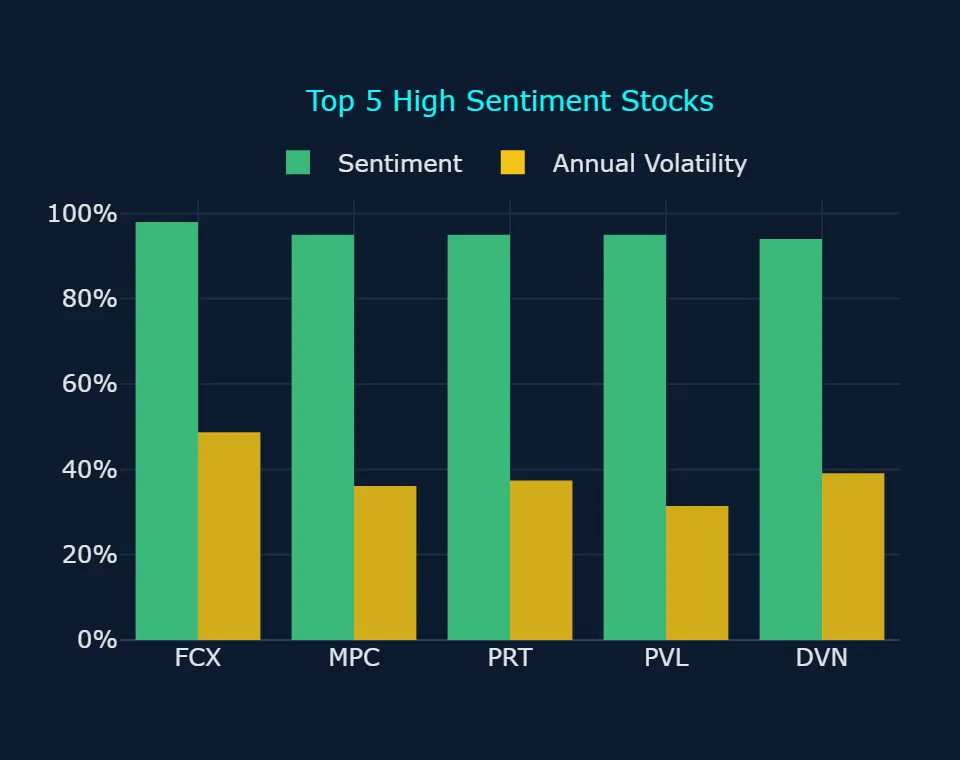
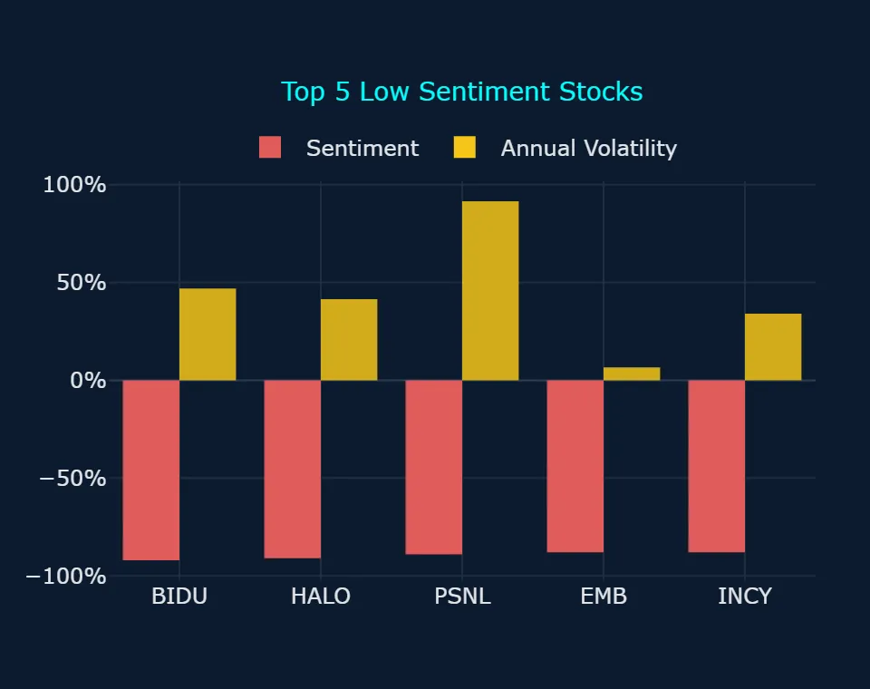
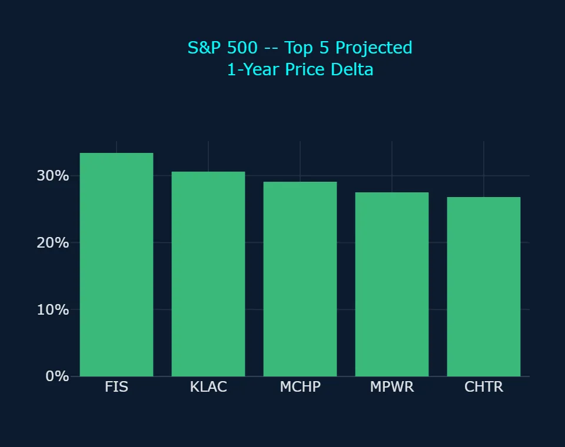
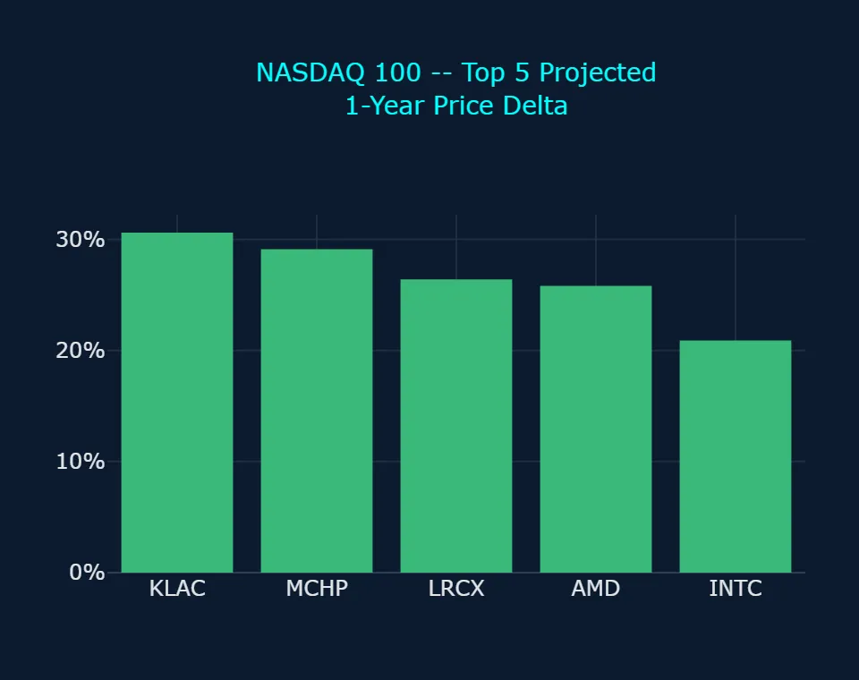
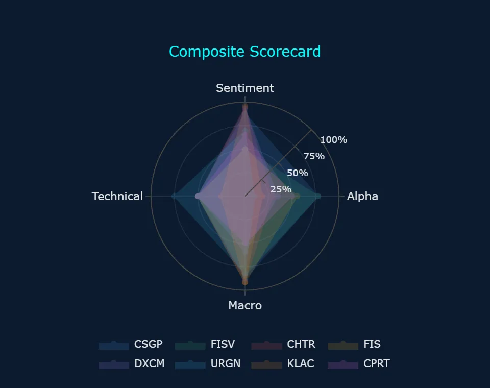
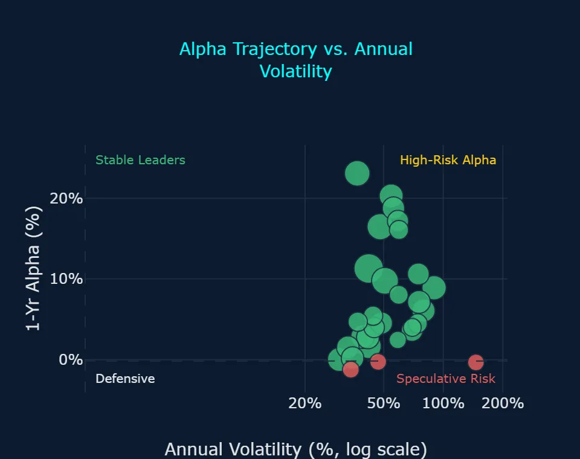
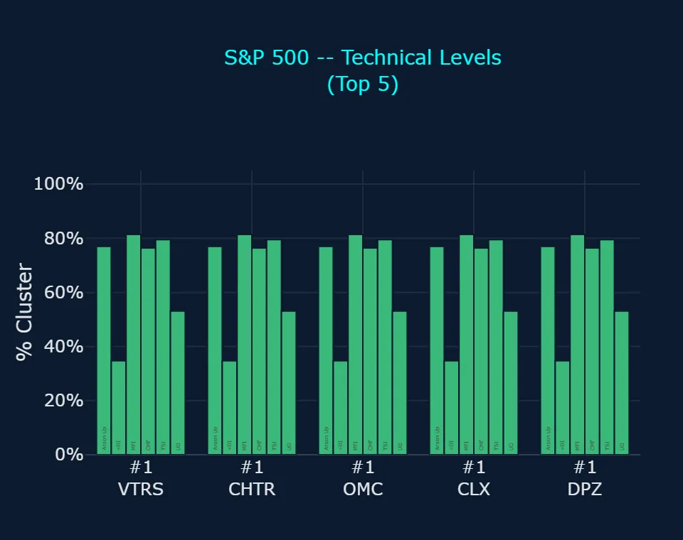
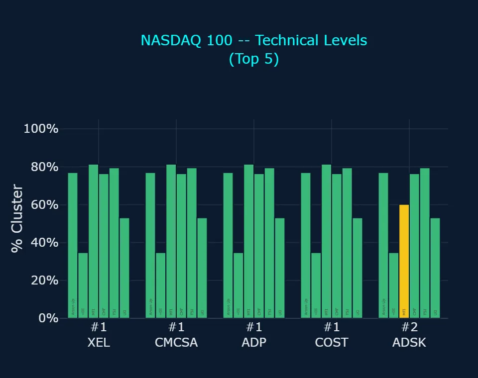
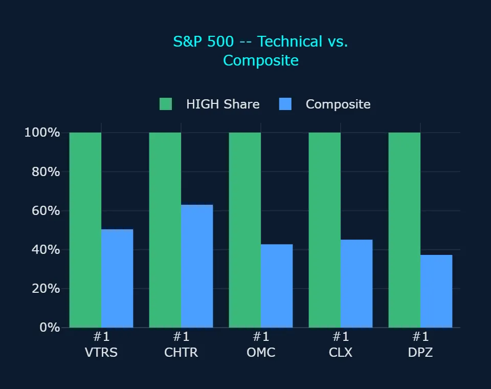
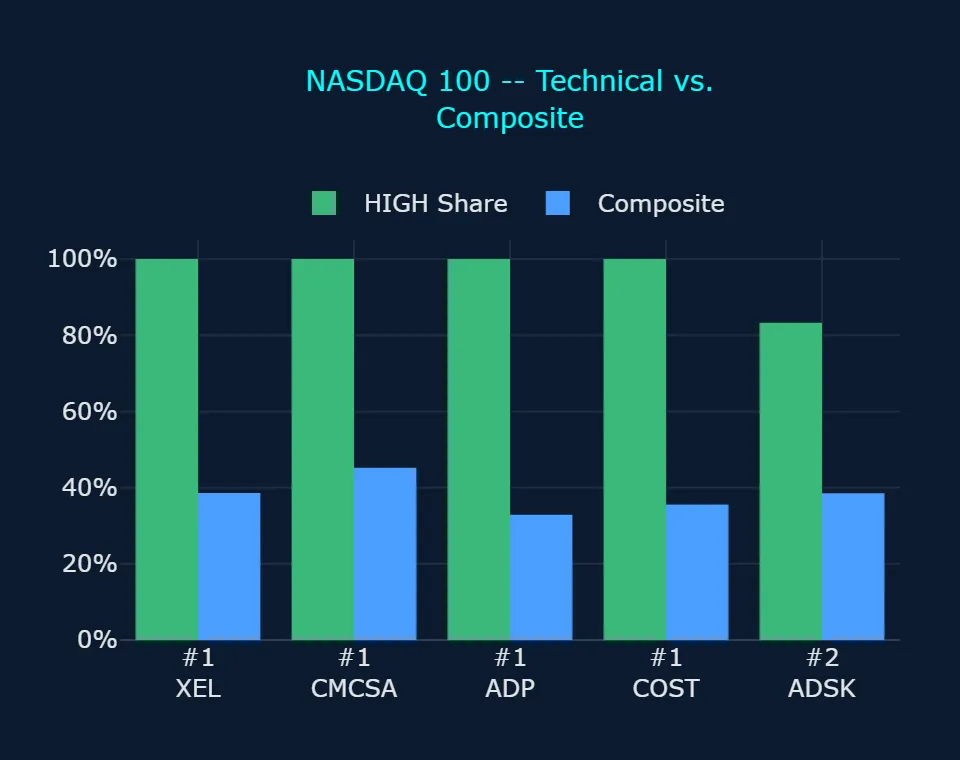

Zoonova AI: Pre-Market Quantitative Briefing – November 17, 2026
Session Quantitative Briefing: The Zoonova AI Intelligence Engine executes a hybrid architecture combining a proprietary Quad-Ensemble machine learning framework with Google Gemini Flash for real-time contextual synthesis and semantic macroeconomic grounding. The quantitative pipeline integrates four specialized estimators: Random Forest Regressor (RFR) for baseline structural stability, eXtreme Gradient Boosting (XGB) optimized for residual loss minimization, Categorical Boosting (CAT) for high-cardinality categorical signal processing, and Temporal Fusion Transformer (TFT) for multi-horizon price and volatility forecasting.
Zoonova AI: Pre-Market Momentum & Liquidity Report
1. QUANTITATIVE MODEL OVERVIEW & SIGNAL METRICS
This market intelligence report synthesizes predictive quantitative analytics generated by Zoonova's Quad-Ensemble machine learning framework, which combines Random Forest Regressor [RFR], eXtreme Gradient Boosting [XGB], Categorical Boosting [CAT], and Temporal Fusion Transformer [TFT] models to forecast price targets and benchmark-relative alpha probability. Qualitative sentiment dynamics are captured via VADER natural language scoring, while multi-asset structural shifts and regime anomalies are identified through BIRCH clustering.
- The SPDR S&P 500 ETF Trust (SPY) closed at $739.95 on 2026-11-16 with negative sentiment of -26.0% and annualized volatility of 16.93%, while the quad-ensemble models project a 1-year target of $816.37, representing an implied price change of +10.3% (Zoonova, 2026-11-16).
- The Invesco QQQ Trust Series 1 (QQQ) concluded at $661.75 with depressed sentiment of -62.0% and annualized volatility of 22.69%, pointing toward a 1-year projected price of $721.26, an implied gain of +9.0% (Zoonova, 2026-11-16).
- The SPDR Dow Jones Industrial Average ETF (DIA) finished at $515.68 with sentiment of -62.0% and annualized volatility of 15.23%, with models projecting a 1-year target of $549.07, an implied change of +6.5% (Zoonova, 2026-11-16).
- Defensive benchmarks showed resilient sentiment, with the Vanguard Total Bond Market ETF (BND) logging sentiment of +23.0%, annualized volatility of 4.42%, and a 1-year target of $76.54 (+8.4%), while the SPDR Gold Shares ETF (GLD) registered sentiment of +84.0%, annualized volatility of 24.80%, and a 1-year target of $374.84 (+6.2%) (Zoonova, 2026-11-16).
- Market breadth reflects severe negative divergence, as BIRCH clustering registered 41 bearish anomalies across 5 moderate severity stocks and 36 low severity names (32 stocks, 4 ETFs), in contrast to just 2 low severity bullish stocks (Zoonova, 2026-11-16).
2. SENTIMENT INSIGHTS – TOP 5 HIGH & LOW
Top 5 High Sentiment Stocks
| Ticker | Company Name | Sentiment Score | Primary Catalyst / Driver |
|---|---|---|---|
| FCX | Freeport-McMoRan Inc | +98.0% | Freeport-McMoRan approved a $4.5 billion expansion at its Bagdad copper mine in Arizona and advanced domestic production plans to address long-term strategic metal demand (Kalkine, 2026-11-16). |
| MPC | Marathon Petroleum Corp | +95.0% | Marathon Petroleum maintained high refining asset utilization and continued disciplined shareholder capital distributions despite broader autumn crack spread volatility (Kalkine Media, 2026-10-29). |
| PRT | PermRock Royalty Trust | +95.0% | PermRock Royalty Trust declared a monthly cash distribution of $0.016204 per unit supported by underlying oil receipts and reduced direct operating expenditures (PR Newswire, 2026-10-20). |
| PVL | Permianville Royalty Trust | +95.0% | Permianville Royalty Trust announced a monthly cash distribution of $0.015000 per unit driven by higher natural gas receipts and initial output from new Haynesville wells (Business Wire, 2026-10-19). |
| DVN | Devon Energy Corp. | +94.0% | Devon Energy exceeded third-quarter profit forecasts and expanded production following its strategic asset review and focused Permian operational realignment (Seeking Alpha, 2026-11-06). |
Top 5 Low Sentiment Stocks
| Ticker | Company Name | Sentiment Score | Primary Friction / Risk Factor |
|---|---|---|---|
| BIDU | Baidu Inc | -92.0% | Baidu faces heightened legal scrutiny following a shareholder class action lawsuit concerning disclosures about legacy advertising revenue contraction relative to AI business growth (PR Newswire, 2026-11-05). |
| HALO | Halozyme Therapeutics Inc. | -91.0% | Halozyme Therapeutics encountered negative sentiment after scheduled insider stock dispositions and persistent market evaluation of drug delivery patent durability (Stock Titan, 2026-11-17). |
| PSNL | Personalis Inc | -89.0% | Personalis contends with investor friction stemming from multiple legal investigations examining the fairness of its pending $16.25 per share acquisition by Tempus AI (PR Newswire, 2026-11-03). |
| EMB* | iShares J.P. Morgan USD Emerging Markets Bond ETF | -88.0% | The iShares J.P. Morgan USD Emerging Markets Bond ETF faces headwinds from a surging US dollar, elevated Treasury yields, and underlying sovereign credit repayment concerns in frontier markets (24/7 Wall St., 2026-11-16). |
| INCY | Incyte Corp. | -88.0% | Incyte halted a planned Phase 3 ovarian cancer trial during pipeline prioritization while managing market focus on the upcoming loss of exclusivity for Jakafi (GuruFocus, 2026-11-17). |
* ETF (exchange-traded fund)
3. ALPHA PROBABILITY & PRICE DELTA LEADERBOARD – 1-YEAR HORIZON
S&P 500 – Top 5 High Alpha Probability (1yr)
| Ticker | Current Price ($) | 1-Yr Target Price ($) | Alpha Probability (%) | Implied Excess Alpha (%) | 10%+ Alpha? |
|---|---|---|---|---|---|
| FISV | $63.32 | $76.03 | 64.75% | 9.76% | Split |
| CSGP | $31.24 | $37.99 | 64.44% | 11.29% | Both Yes |
| FIS | $28.30 | $37.76 | 46.21% | 23.09% | Split |
| BSX | $43.69 | $48.87 | 42.59% | 1.53% | Both No |
| GLW | $106.17 | $125.66 | 42.40% | 8.03% | Both No |
S&P 500 – Top 5 Price Delta + % Change (1yr)
| Ticker | Current Price ($) | 1-Yr Target Price ($) | Absolute Delta ($) | Projected 1-Yr % Change (%) | Implied Excess Alpha (%) |
|---|---|---|---|---|---|
| FIS | $28.30 | $37.76 | $9.46 | 33.43% | 23.09% |
| KLAC | $143.96 | $188.04 | $44.08 | 30.62% | 20.29% |
| MCHP | $58.64 | $75.70 | $17.06 | 29.09% | 18.77% |
| MPWR | $1,314.00 | $1,675.44 | $361.44 | 27.51% | 17.18% |
| CHTR | $138.95 | $176.20 | $37.25 | 26.81% | 16.48% |
NASDAQ 100 – Top 5 High Alpha Probability (1yr)
| Ticker | Current Price ($) | 1-Yr Target Price ($) | Alpha Probability (%) | Implied Excess Alpha (%) | 10%+ Alpha? |
|---|---|---|---|---|---|
| CPRT | $32.08 | $35.41 | 41.47% | 0.02% | Both No |
| DXCM | $81.61 | $91.41 | 28.73% | 1.68% | Both No |
| NFLX | $60.75 | $67.14 | 25.46% | 0.19% | Both No |
| MRVL | $145.36 | $169.21 | 23.08% | 6.08% | Both No |
| MRNA | $215.27 | $236.73 | 19.72% | -0.35% | Both No |
NASDAQ 100 – Top 5 Price Delta + % Change (1yr)
| Ticker | Current Price ($) | 1-Yr Target Price ($) | Absolute Delta ($) | Projected 1-Yr % Change (%) | Implied Excess Alpha (%) |
|---|---|---|---|---|---|
| KLAC | $143.96 | $188.04 | $44.08 | 30.62% | 20.29% |
| MCHP | $58.64 | $75.70 | $17.06 | 29.09% | 18.77% |
| LRCX | $210.83 | $266.49 | $55.66 | 26.40% | 16.07% |
| AMD | $504.28 | $634.30 | $130.02 | 25.78% | 15.45% |
| INTC | $55.47 | $67.09 | $11.62 | 20.95% | 10.62% |
4. REAL-TIME CONTEXTUAL ENRICHMENT
Equity markets experienced intense selling pressure heading into 2026-11-17, primarily driven by a sharp retreat across technology and artificial intelligence infrastructure providers. On 2026-11-16, the S&P 500 declined 1.9% and the Nasdaq retreated 2.5%, while the VIX volatility index climbed above 23 as market participants reacted to potential US export curbs on advanced AI semiconductors and heightened pre-earnings anxiety (Rock & Turner, 2026-11-16). Weakness extended into the 2026-11-17 trading session, where pre-market futures pointed to further declines of 0.5% for S&P 500 futures and 0.6% for Nasdaq 100 futures (Admiral Markets, 2026-11-17). Concurrently, a hawkish repricing of Federal Reserve policy expectations gathered momentum following upside surprises in core inflation metrics. Fixed income markets have priced an aggressive stance, lifting 2-year US Treasury yields toward 4.96% and pricing a 92% probability of a policy rate increase at the December Federal Open Market Committee meeting, which has fueled a sharp rebound in the US dollar index and tightened cross-asset financial conditions (MUFG Research, 2026-11-16).
These macroeconomic headwinds closely correlate with Zoonova ML predictive indicators, which register pronounced sector divergence and significant cluster-level risk. In the Main Scorecard, high-conviction opportunities are concentrated in high-margin business service platforms rather than cyclical hardware. CoStar Group, Inc. (CSGP) leads the Main Scorecard with a Composite of 75.2, an Alpha Rating of 77.3, Sentiment Rating of 88.0, and Macro Alignment of 87.6, with both models expecting it to beat the benchmark by 10%+ based on a 64.44% 1-year alpha probability and +11.29% projected 1-year alpha (Zoonova, 2026-11-16). Similarly, Fiserv, Inc. (FISV) demonstrates an Alpha Rating of 77.7 and a 64.75% probability of generating 10%+ excess alpha following operational cost discipline and capital returns, though the two models split given an implied 1-year alpha of +9.76% (Zoonova, 2026-11-16; TIKR.com, 2026-11-10). Conversely, semiconductor equipment leaders and mega-cap tech stocks dominate the anomaly radar. The BIRCH clustering algorithm confirmed Bearish Short-Term (3d) Trend Anomalies for KLA Corp (KLAC), Applied Materials Inc (AMAT), Lam Research Corp (LRCX), and Advanced Micro Devices Inc (AMD) (Zoonova, 2026-11-16). On the Tech Stock Scorecard, mega-cap platforms display muted Composite ratings, including Apple Inc (AAPL) at 29.4 and Amazon.com Inc (AMZN) at 27.9, both constrained by Macro Alignment scores below 12.0 (Zoonova, 2026-11-16). This alignment validates the quad-ensemble models' near-term caution on technology, affirming that capital flows are rotating toward defensive cash-flow visibility and asset-backed distribution plays.
5. ANOMALY DETECTION SCANNER
Direction: Bearish
Moderate Severity (5 stocks)
- GLW – Corning, Inc.: Bearish Short-Term (3d) Trend Anomaly, Bearish Long-Term (1w) Trend Anomaly
- NTRA – Natera Inc: Bearish Short-Term (3d) Trend Anomaly, Bearish Long-Term (1w) Trend Anomaly
- PTGX – Protagonist Therapeutics Inc: Bearish Short-Term (3d) Trend Anomaly, Bearish Long-Term (1w) Trend Anomaly
- ROST – Ross Stores, Inc.: Bearish Short-Term (3d) Trend Anomaly, Bearish Long-Term (1w) Trend Anomaly
- RVMD – Revolution Medicines Inc: Bearish Short-Term (3d) Trend Anomaly, Bearish Long-Term (1w) Trend Anomaly
Low Severity (36 names: 32 stocks, 4 ETFs)
- ADI – Analog Devices Inc.: Bearish Short-Term (3d) Trend Anomaly
- AMAT – Applied Materials Inc.: Bearish Short-Term (3d) Trend Anomaly
- AMD – Advanced Micro Devices Inc.: Bearish Short-Term (3d) Trend Anomaly
- ANET – Arista Networks Inc: Bearish Short-Term (3d) Trend Anomaly
- ASML – ASML Holding NV: Bearish Short-Term (3d) Trend Anomaly
- CAT – Caterpillar Inc.: Bearish Short-Term (3d) Trend Anomaly
- CMI – Cummins Inc.: Bearish Short-Term (3d) Trend Anomaly
- EEM* – iShares MSCI Emerging Markets ETF: Bearish Short-Term (3d) Trend Anomaly
- ESLT – Elbit Systems Ltd.: Bearish Short-Term (3d) Trend Anomaly
- FCX – Freeport-McMoRan Inc: Bearish Short-Term (3d) Trend Anomaly
- GDX* – VanEck Gold Miners ETF: Bearish Long-Term (1w) Trend Anomaly
- GH – Guardant Health Inc: Bearish Short-Term (3d) Trend Anomaly
- GOOG – Alphabet Inc: Bearish Short-Term (3d) Trend Anomaly
- GOOGL – Alphabet Inc: Bearish Short-Term (3d) Trend Anomaly
- HPE – Hewlett Packard Enterprise Co: Bearish Short-Term (3d) Trend Anomaly
- HWM – Howmet Aerospace Inc: Bearish Short-Term (3d) Trend Anomaly
- IEMG* – iShares Core MSCI Emerging Markets ETF: Bearish Short-Term (3d) Trend Anomaly
- INTC – Intel Corp.: Bearish Short-Term (3d) Trend Anomaly
- KLAC – KLA Corp.: Bearish Short-Term (3d) Trend Anomaly
- LRCX – Lam Research Corp.: Bearish Short-Term (3d) Trend Anomaly
- MPC – Marathon Petroleum Corp: Bearish Short-Term (3d) Trend Anomaly
- MPWR – Monolithic Power System Inc: Bearish Short-Term (3d) Trend Anomaly
- MRNA – Moderna Inc: Bearish Long-Term (1w) Trend Anomaly
- MRVL – Marvell Technology Inc: Bearish Short-Term (3d) Trend Anomaly
- MU – Micron Technology Inc.: Bearish Short-Term (3d) Trend Anomaly
- NEM – Newmont Corp: Bearish Long-Term (1w) Trend Anomaly
- PLTR – Palantir Technologies Inc: Bearish Short-Term (3d) Trend Anomaly
- RYTM – Rhythm Pharmaceuticals Inc.: Bearish Short-Term (3d) Trend Anomaly
- SCCO – Southern Copper Corporation: Bearish Short-Term (3d) Trend Anomaly
- STX – Seagate Technology Holdings Plc: Bearish Short-Term (3d) Trend Anomaly
- TER – Teradyne, Inc.: Bearish Short-Term (3d) Trend Anomaly
- TTWO – Take-Two Interactive Software, Inc.: Bearish Short-Term (3d) Trend Anomaly
- TWST – Twist Bioscience Corp: Bearish Long-Term (1w) Trend Anomaly
- VLUE* – iShares MSCI USA Value Factor ETF: Bearish Short-Term (3d) Trend Anomaly
- WDC – Western Digital Corp.: Bearish Short-Term (3d) Trend Anomaly
- ZYME – Zymeworks BC Inc: Bearish Long-Term (1w) Trend Anomaly
Direction: Bullish
Low Severity (2 stocks)
- TSN – Tyson Foods, Inc.: Bullish Short-Term (3d) Trend Anomaly
- URGN – UroGen Pharma Ltd: Bullish Short-Term (3d) Trend Anomaly
* ETF (exchange-traded fund)
6. STRATEGIC INVESTMENT ASSESSMENT
- Prioritize capital allocation toward top-ranked software and business information compounders on the Main Scorecard, led by CoStar Group, Inc. (CSGP) with a Composite of 75.2, where both models expect 10%+ outperformance, and Fiserv, Inc. (FISV) with an Alpha Rating of 77.7, while noting that the two models split on FISV's 1-year alpha reaching the 10%+ threshold (Zoonova, 2026-11-16).
- Maintain a defensive stance on semiconductor capital equipment and large-cap hardware names, where the BIRCH model confirmed Bearish Short-Term (3d) Trend Anomalies across key industry bellwethers including KLA Corp (KLAC), Applied Materials Inc (AMAT), Lam Research Corp (LRCX), and Advanced Micro Devices Inc (AMD) (Zoonova, 2026-11-16).
- Utilize low-volatility fixed income to insulate equity portfolios against rising discount rates, leveraging the Vanguard Total Bond Market ETF (BND) which exhibits positive sentiment (+23.0%), low annualized volatility of 4.42%, and a projected 1-year price of $76.54 (+8.4% implied change) (Zoonova, 2026-11-16).
- Incorporate real asset hedges such as the SPDR Gold Shares ETF (GLD) to protect against dollar volatility and macro uncertainty, supported by strong sentiment (+84.0%) and a projected 1-year target of $374.84 (+6.2% implied change) (Zoonova, 2026-11-16).
- Exercise caution in low-sentiment healthcare and emerging market sovereign debt names, as Halozyme Therapeutics Inc (HALO) with sentiment of -91.0%, Incyte Corp (INCY) with sentiment of -88.0%, and iShares J.P. Morgan USD Emerging Markets Bond ETF (EMB) with sentiment of -88.0% reflect ongoing structural litigation, pipeline, and rate pressures (Zoonova, 2026-11-16).
7. STOCK SCORECARD
Main Scorecard
| Ticker | Composite (%) | Alpha Rating | 10%+ Alpha? | Projected 1-Yr Change (%) | Street Consensus (Upside) | Next Earnings | Sentiment Rating | Technical Signal | Macro Alignment | Anomaly Flag | Catalyst / Risk | Market Cap | EPS Revisions (30d) | Short Interest / DTC | Options Flow | Earnings Surprise (4Q) | Bias |
|---|---|---|---|---|---|---|---|---|---|---|---|---|---|---|---|---|---|
| CSGP | 75.2% | 77.3 | Both Yes | +21.6% | Buy (+14.8%) | 2027-02-23 | 88.0 | 50.0 | 87.6 | None | Record Profitability Growth | $12.5B | Upward (+3.2%) | 3.5% / 2.8 DTC | Bullish (Call Skew) | 4/4 Beats (+8.1% avg) | Bullish |
| FISV | 65.1% | 77.7 | Split | +20.1% | Hold (-12.7%) | 2027-02-09 | 50.0 | 50.0 | 84.0 | None | Cost Reduction Plan | $33.9B | Downward (-4.1%) | 2.8% / 2.2 DTC | Bullish (Call Skew) | 3/4 Beats | Bullish |
| CHTR | 63.0% | 29.0 | Split | +26.8% | Hold (+25.5%) | 2027-01-29 | 94.5 | 50.0 | 90.9 | None | Broadband Subscriber Losses | $12.8B | Downward (-12.5%) | 9.2% / 6.4 DTC | Bearish (Put Heavy) | 2/4 Beats | Neutral |
| FIS | 60.0% | 55.4 | Split | +33.4% | Hold (+24.6%) | 2027-02-22 | 50.0 | 50.0 | 91.9 | None | Guidance Cut Headwind | $15.2B | Downward (-6.8%) | 4.1% / 3.0 DTC | Bearish (Put Heavy) | 3/4 Beats | Neutral |
| DXCM | 57.7% | 34.5 | Both No | +12.0% | Buy (+21.3%) | 2027-02-11 | 92.5 | 50.0 | 58.9 | None | Extended Sensor Rollout | $31.1B | Upward (+2.5%) | 3.7% / 2.6 DTC | Bullish (Call Skew) | 4/4 Beats (+12.3% avg) | Neutral |
| URGN | 55.4% | 9.7 | Both No | +19.2% | Strong Buy (+106.4%) | 2027-03-01 | 69.5 | 75.0 | 81.8 | Bullish (3d) | Urothelial Cancer Ramp | $1.4B | Downward (-3.4%) | 8.5% / 4.8 DTC | Bullish (Call Skew) | 2/4 Beats | Neutral |
| KLAC | 54.1% | 18.3 | Split | +30.6% | Buy (+52.6%) | 2027-01-28 | 96.0 | 25.0 | 91.6 | Bearish (3d) | Semiconductor Equipment Recovery | $198.5B | Upward (+3.8%) | 1.9% / 1.7 DTC | Bearish (Put Heavy) | 4/4 Beats (+5.5% avg) | Neutral |
| CPRT | 53.6% | 49.7 | Both No | +10.4% | Buy (+18.1%) | 2026-11-19 (in 2d) | 65.0 | 50.0 | 49.6 | None | Salvage Auction Growth | $29.5B | Neutral/Flat (0.0%) | 2.1% / 2.5 DTC | Neutral / Mixed | 3/4 Beats | Neutral |
| DVN | 52.9% | 10.7 | Both No | +13.2% | Buy (+34.9%) | 2027-02-16 | 97.0 | 50.0 | 64.8 | None | Record Oil Output | $53.1B | Downward (-2.1%) | 3.2% / 2.4 DTC | Bullish (Call Skew) | 3/4 Beats | Neutral |
| MRVL | 50.9% | 27.7 | Both No | +16.4% | Buy (+106.4%) | 2026-12-01 (in 14d) | 85.5 | 25.0 | 74.8 | Bearish (3d) | Optical Interconnect Demand | $126.8B | Upward (+4.5%) | 2.6% / 2.1 DTC | Bearish (Put Heavy) | 4/4 Beats (+6.1% avg) | Neutral |
| TWST | 49.6% | 19.7 | Both No | +17.5% | Buy (+22.7%) | 2027-02-04 | 87.5 | 25.0 | 77.7 | Bearish (1w) | Synthetic Biology Orders | $6.9B | Downward (-37.8%) | 11.4% / 5.2 DTC | Bearish (Put Heavy) | 2/4 Beats | Neutral |
| ESLT | 49.4% | 33.8 | Both No | +13.1% | Buy (+30.0%) | 2027-03-18 | 80.5 | 25.0 | 64.5 | Bearish (3d) | Defense Order Surge | $32.1B | Upward (+1.1%) | 1.2% / 1.8 DTC | Bullish (Call Skew) | 4/4 Beats (+9.4% avg) | Neutral |
| BSX | 48.6% | 51.1 | Both No | +11.9% | Buy (+13.5%) | 2027-01-28 | 36.5 | 50.0 | 58.2 | None | Medical Device Expansion | $64.3B | Downward (-3.2%) | 1.8% / 2.0 DTC | Neutral / Mixed | 3/4 Beats | Bearish |
| NFLX | 48.6% | 30.5 | Both No | +10.5% | Buy (+46.7%) | 2027-01-21 | 67.0 | 50.0 | 51.1 | None | Ad Revenue Moderation | $249.5B | Downward (-1.8%) | 1.7% / 1.5 DTC | Bearish (Put Heavy) | 3/4 Beats | Neutral |
| FCX | 47.3% | 7.3 | Both No | +14.9% | Buy (+36.4%) | 2027-01-20 | 99.0 | 25.0 | 70.7 | Bearish (3d) | Copper Capacity Expansion | $85.0B | Upward (+3.6%) | 1.9% / 1.6 DTC | Bullish (Call Skew) | 4/4 Beats (+15.2% avg) | Neutral |
| LRCX | 35.6% | 20.9 | Split | +26.4% | Buy (+69.6%) | 2027-01-27 | 19.5 | 25.0 | 90.8 | Bearish (3d) | Wafer Fab Spending | $263.4B | Downward (-2.8%) | 2.4% / 1.9 DTC | Bearish (Put Heavy) | 4/4 Beats (+6.9% avg) | Bearish |
| GLW | 34.5% | 50.9 | Both No | +18.4% | Buy (+62.2%) | 2027-01-27 | 13.5 | 0.0 | 79.4 | Bearish (3d/1w) | Optical Fiber Growth | $98.3B | Upward (+4.2%) | 2.1% / 2.3 DTC | Bearish (Put Heavy) | 4/4 Beats (+4.5% avg) | Bearish |
| WDC | 30.9% | 18.2 | Both No | +14.3% | Buy (+110.4%) | 2027-01-28 | 22.0 | 25.0 | 68.7 | Bearish (3d) | Storage Demand Expansion | $105.2B | Upward (+14.3%) | 3.1% / 2.0 DTC | Bearish (Put Heavy) | 4/4 Beats (+12.9% avg) | Bearish |
| BIDU | 26.7% | 13.4 | Both No | +10.0% | Hold (+75.8%) | 2027-03-03 | 4.0 | 50.0 | 45.7 | None | Advertising Revenue Decline | $24.4B | Downward (-24.0%) | 2.5% / 2.1 DTC | Bearish (Put Heavy) | 2/4 Beats | Bearish |
| MRNA | 26.4% | 23.7 | Both No | +10.0% | Hold (-62.7%) | 2027-02-19 | 17.0 | 25.0 | 43.9 | Bearish (1w) | Cancer Vaccine Progress | $87.2B | Upward (+8.5%) | 8.9% / 3.4 DTC | Neutral / Mixed | 2/4 Beats | Bearish |
10%+ Alpha? – whether Zoonova's two 1-year models (alpha probability and price target) expect the stock to beat the benchmark by 10%+. “Both No” is common: 10% is a high bar.
Tech Stock Scorecard
| Ticker | Composite (%) | Alpha Rating | 10%+ Alpha? | Projected 1-Yr Change (%) | Street Consensus (Upside) | Next Earnings | Sentiment Rating | Technical Signal | Macro Alignment | Anomaly Flag | Catalyst / Risk | Market Cap | EPS Revisions (30d) | Short Interest / DTC | Options Flow | Earnings Surprise (4Q) | Bias |
|---|---|---|---|---|---|---|---|---|---|---|---|---|---|---|---|---|---|
| NVDA | 46.9% | 10.1 | Both No | +14.0% | Buy (+74.7%) | 2026-11-17 (today) | 71.5 | 50.0 | 67.2 | None | China Export Curbs | $3.75T | Upward (+4.2%) | 1.2% / 1.1 DTC | Bearish (Put Heavy) | 4/4 Beats (+8.5% avg) | Neutral |
| INTC | 46.3% | 7.6 | Split | +20.9% | Hold (+74.7%) | 2027-01-21 | 82.5 | 25.0 | 85.7 | Bearish (3d) | Weak Guidance Pressure | $464.4B | Downward (-8.4%) | 4.8% / 3.2 DTC | Bearish (Put Heavy) | 4/4 Beats (+12.0% avg) | Neutral |
| TSLA | 38.6% | 3.7 | Both No | +12.4% | Hold (+9.2%) | 2027-02-03 | 51.5 | 50.0 | 60.6 | None | Robotaxi Fleet Expansion | $1.49T | Downward (-3.2%) | 3.4% / 2.1 DTC | Unusual Volume Detected | 2/4 Beats | Bearish |
| META | 38.4% | 2.2 | Both No | +10.5% | Buy (+33.0%) | 2027-01-27 | 60.5 | 50.0 | 50.7 | None | Ad Monetization Gains | $1.56T | Downward (-2.4%) | 1.3% / 1.7 DTC | Neutral / Mixed | 4/4 Beats (+7.1% avg) | Bearish |
| GOOGL | 34.9% | 5.1 | Both No | +8.9% | Buy (+45.4%) | 2027-02-03 | 90.0 | 25.0 | 23.3 | Bearish (3d) | Cloud Revenue Growth | $3.60T | Upward (+1.8%) | 1.1% / 1.6 DTC | Neutral / Mixed | 4/4 Beats (+5.4% avg) | Bearish |
| MSFT | 31.1% | 5.1 | Both No | +6.0% | Buy (+17.7%) | 2027-01-26 | 67.0 | 50.0 | 1.7 | None | Azure Cloud Acceleration | $3.85T | Upward (+2.1%) | 0.8% / 1.2 DTC | Bullish (Call Skew) | 4/4 Beats (+4.1% avg) | Bearish |
| AMD | 30.7% | 4.2 | Split | +25.8% | Buy (+27.4%) | 2027-02-02 | 20.5 | 25.0 | 90.6 | Bearish (3d) | Data Center Expansion | $875.9B | Upward (+5.1%) | 2.3% / 1.8 DTC | Neutral / Mixed | 4/4 Beats (+4.8% avg) | Bearish |
| AVGO | 30.1% | 3.8 | Both No | +11.5% | Buy (+57.5%) | 2026-12-09 (in 22d) | 20.5 | 50.0 | 56.7 | None | Custom Silicon Backlog | $1.58T | Upward (+4.0%) | 1.4% / 1.5 DTC | Bearish (Put Heavy) | 4/4 Beats (+6.2% avg) | Bearish |
| AAPL | 29.4% | 3.8 | Both No | +6.4% | Buy (-1.6%) | 2027-01-28 | 60.0 | 50.0 | 3.6 | None | Apple Intelligence Expansion | $5.12T | Neutral/Flat (0.0%) | 1.0% / 1.5 DTC | Neutral / Mixed | 3/4 Beats | Bearish |
| AMZN | 27.9% | 1.8 | Both No | +7.5% | Buy (+24.8%) | 2027-01-28 | 50.0 | 50.0 | 11.7 | None | Cloud Demand Recovery | $2.78T | Upward (+3.5%) | 0.9% / 1.4 DTC | Bullish (Call Skew) | 4/4 Beats (+6.8% avg) | Bearish |
| SPCX | N/H | N/H | N/A | N/A | Buy | 2027-01-20 | N/H | N/H | N/H | None | Starship Catch Milestone | $1.90T | Upward (+14.2%) | 31.0% / 4.5 DTC | Bullish (Call Skew) | 2/2 Beats | N/A |
N/H: no ML scores yet (insufficient trading history for the models).
Search-grounded columns (Street Consensus (Upside), Next Earnings, Catalyst / Risk, Market Cap, EPS Revisions (30d), Short Interest / DTC, Options Flow, Earnings Surprise (4Q)): MarketBeat (sources dated 2026-11-16 to 2026-11-17).






Educational purposes only. Not investment advice.
Zoonova AI: Pre-Market Technical Analysis Report
Telecom and defensive leaders show uniform technical momentum, yet Scorecard composite divergence persists across six of ten top setups.
1. 6 CORE INDICATORS
Indicator levels (LOW / MEDIUM / HIGH) and % Cluster come from Zoonova's BIRCH model (Balanced Iterative Reducing and Clustering using Hierarchies), an unsupervised machine-learning clustering model used for pattern recognition. Each indicator is clustered across the stock universe; % Cluster is the centroid of the cluster a stock falls in.
| Indicator | Category | Role |
|---|---|---|
| ARUPAroon Up | Trend Direction | Recency of the highest high in the lookback window; collapses in bear markets, so HIGH means price keeps printing fresh swing highs. |
| +DIPositive Directional Indicator | Trend Direction | Upward directional movement relative to true range; unlike ADX it collapses in sell-offs, so HIGH confirms buyer-driven expansion. |
| MFIMoney Flow Index | Volume / Inflow | Volume-weighted RSI from 0 to 100; falls as money leaves on down days, so HIGH means inflow on up days outweighs outflow. |
| CMFChaikin Money Flow | Volume / Inflow | Close location within the bar weighted by volume; plunges negative in liquidation, so HIGH confirms sustained buying into the top of daily ranges. |
| TSITrue Strength Index | Momentum | Double-smoothed momentum from -100 to +100; deeply negative in downtrends, so HIGH shows consistent multi-period upward thrust. |
| UOUltimate Oscillator | Momentum | Buying pressure across 7-, 14- and 28-period windows from 0 to 100; sinks when closes sit near the lows, so HIGH means buyers are in control on every timeframe. |
2. TECHNICAL REGIME
| Index | Universe | All HIGH (6/6) | Avg HIGH | Aroon Up HIGH | +DI HIGH | MFI HIGH | CMF HIGH | TSI HIGH | UO HIGH |
|---|---|---|---|---|---|---|---|---|---|
| S&P 500 | 424 | 40 | 2.8/6 | 302 | 172 | 92 | 168 | 191 | 245 |
| NASDAQ 100 | 71 | 4 | 2.1/6 | 39 | 25 | 10 | 20 | 24 | 32 |
S&P 500 constituents demonstrate broader technical support with an average HIGH count of 2.8 and 40 stocks with all indicators HIGH, led by 302 members at HIGH in Aroon Up. The NASDAQ 100 reflects far narrower breadth, averaging a 2.1 HIGH count with only 4 stocks with all indicators HIGH and just 10 members showing HIGH Money Flow Index readings.
3. TOP 5 BULLISH CONFLUENCE
Ranking: Rank = HIGH count (#1 = 6/6, #2 = 5/6, ...); within a rank, Sentiment (desc), then ticker. Sentiment only orders tickers within a rank; it is not a technical signal.
S&P 500 – Top 5 Bullish Confluence
| Rank | Ticker | Aroon Up | +DI | MFI | CMF | TSI | UO | HIGH | Sentiment |
|---|---|---|---|---|---|---|---|---|---|
| 1 | VTRS | HIGH 77.0% | HIGH 34.7% | HIGH 81.4% | HIGH 76.4% | HIGH 79.5% | HIGH 53.1% | 6/6 | +90.0% |
| 1 | CHTR | HIGH 77.0% | HIGH 34.7% | HIGH 81.4% | HIGH 76.4% | HIGH 79.5% | HIGH 53.1% | 6/6 | +89.0% |
| 1 | OMC | HIGH 77.0% | HIGH 34.7% | HIGH 81.4% | HIGH 76.4% | HIGH 79.5% | HIGH 53.1% | 6/6 | +88.0% |
| 1 | CLX | HIGH 77.0% | HIGH 34.7% | HIGH 81.4% | HIGH 76.4% | HIGH 79.5% | HIGH 53.1% | 6/6 | +80.0% |
| 1 | DPZ | HIGH 77.0% | HIGH 34.7% | HIGH 81.4% | HIGH 76.4% | HIGH 79.5% | HIGH 53.1% | 6/6 | +77.0% |
S&P 500 – Signal Groups
| Rank | Ticker | Trend Direction | Volume / Inflow | Momentum |
|---|---|---|---|---|
| 1 | VTRS | 2 of 2 HIGH | 2 of 2 HIGH | 2 of 2 HIGH |
| 1 | CHTR | 2 of 2 HIGH | 2 of 2 HIGH | 2 of 2 HIGH |
| 1 | OMC | 2 of 2 HIGH | 2 of 2 HIGH | 2 of 2 HIGH |
| 1 | CLX | 2 of 2 HIGH | 2 of 2 HIGH | 2 of 2 HIGH |
| 1 | DPZ | 2 of 2 HIGH | 2 of 2 HIGH | 2 of 2 HIGH |
NASDAQ 100 – Top 5 Bullish Confluence
| Rank | Ticker | Aroon Up | +DI | MFI | CMF | TSI | UO | HIGH | Sentiment |
|---|---|---|---|---|---|---|---|---|---|
| 1 | XEL | HIGH 77.0% | HIGH 34.7% | HIGH 81.4% | HIGH 76.4% | HIGH 79.5% | HIGH 53.1% | 6/6 | +66.0% |
| 1 | CMCSA | HIGH 77.0% | HIGH 34.7% | HIGH 81.4% | HIGH 76.4% | HIGH 79.5% | HIGH 53.1% | 6/6 | +49.0% |
| 1 | ADP | HIGH 77.0% | HIGH 34.7% | HIGH 81.4% | HIGH 76.4% | HIGH 79.5% | HIGH 53.1% | 6/6 | +44.0% |
| 1 | COST | HIGH 77.0% | HIGH 34.7% | HIGH 81.4% | HIGH 76.4% | HIGH 79.5% | HIGH 53.1% | 6/6 | +33.0% |
| 2 | ADSK | HIGH 77.0% | HIGH 34.7% | MEDIUM 60.2% | HIGH 76.4% | HIGH 79.5% | HIGH 53.1% | 5/6 | +92.0% |
NASDAQ 100 – Signal Groups
| Rank | Ticker | Trend Direction | Volume / Inflow | Momentum |
|---|---|---|---|---|
| 1 | XEL | 2 of 2 HIGH | 2 of 2 HIGH | 2 of 2 HIGH |
| 1 | CMCSA | 2 of 2 HIGH | 2 of 2 HIGH | 2 of 2 HIGH |
| 1 | ADP | 2 of 2 HIGH | 2 of 2 HIGH | 2 of 2 HIGH |
| 1 | COST | 2 of 2 HIGH | 2 of 2 HIGH | 2 of 2 HIGH |
| 2 | ADSK | 2 of 2 HIGH | 1 of 2 HIGH | 2 of 2 HIGH |
4. TICKER READS
S&P 500
- #1 VTRS – 6/6 HIGH, with full alignment across Trend Direction, Volume / Inflow, and Momentum confirming complete upside expansion. High Aroon Up and +DI reflect consistent swing highs, while positive MFI and CMF confirm persistent accumulation into daily highs. The setup carries a Mixed verdict as a 50.4 Composite aligns moderately with technical strength. Watch: Loss of HIGH on MFI or CMF signaling diminished net capital accumulation.
- #1 CHTR – 6/6 HIGH, displaying solid trend and volume strength backed by high readings across Aroon Up, +DI, MFI, and CMF. High TSI and Ultimate Oscillator signal persistent multi-period momentum and strong multi-timeframe buying pressure. Supported by a 90.9 Macro Alignment and 63.0 Composite, the profile delivers a Confirmed technical posture. Watch: A drop in Aroon Up or Ultimate Oscillator below the HIGH cluster centroid.
- #1 OMC – 6/6 HIGH, driven by top-cluster readings across trend, accumulation, and momentum indicators including Aroon Up and Chaikin Money Flow. Both Volume / Inflow indicators sit at HIGH, confirming aggressive institutional accumulation into session closes. The verdict is Divergent as the weak 42.7 Composite and 0.8 Alpha Rating fail to match technical breadth. Watch: Weakening Chaikin Money Flow or TSI falling out of the top cluster.
- #1 CLX – 6/6 HIGH, characterized by maximum participation across Trend Direction, Volume / Inflow, and Momentum groups. Aroon Up and +DI demonstrate continuous upward range expansion, while Money Flow Index confirms steady capital inflows. A 45.1 Composite and 3.8 Alpha Rating keep the overall verdict Mixed despite clean technical alignment. Watch: Outflow indicated by Money Flow Index falling below the HIGH cluster level.
- #1 DPZ – 6/6 HIGH, showing comprehensive technical strength across Aroon Up, +DI, TSI, and Ultimate Oscillator. Volume / Inflow indicators confirm strong net buyer thrust through high readings in both MFI and CMF. However, the profile is Divergent due to a depressed 37.3 Composite pressured by a 4.5 Macro Alignment score. Watch: A contraction in True Strength Index or +DI out of the top cluster.
NASDAQ 100
- #1 XEL – 6/6 HIGH, registering top-tier momentum and trend scores anchored by high Aroon Up, +DI, and Ultimate Oscillator. Volume / Inflow confirmation is present with both MFI and CMF sitting in the upper cluster. The setup is Divergent because a 38.6 Composite and 1.2 Alpha Rating severely lag the technical profile. Watch: A decline in Money Flow Index indicating reduced institutional accumulation.
- #1 CMCSA – 6/6 HIGH, demonstrating synchronized strength across Trend Direction, Volume / Inflow, and Momentum. Sustained highs in Aroon Up and +DI point to robust upward momentum, supported by solid CMF accumulation. The profile receives a Mixed verdict as a 45.2 Composite balances technical perfection against modest fundamental metrics. Watch: A drop in Chaikin Money Flow or TSI below the top cluster threshold.
- #1 ADP – 6/6 HIGH, exhibiting universal technical strength across Aroon Up, +DI, CMF, and Ultimate Oscillator. Both momentum indicators sit in the top cluster, reflecting buyer dominance across multi-period windows. The read is Divergent given a weak 32.9 Composite, weighed down by a 0.6 Alpha Rating and 10.9 Macro Alignment. Watch: Loss of HIGH status in Aroon Up or +DI reflecting trend exhaustion.
- #1 COST – 6/6 HIGH, featuring robust readings in Aroon Up, +DI, MFI, and Ultimate Oscillator. Persistent buying pressure on daily closes is verified by a top-cluster Chaikin Money Flow. The setup is Divergent because a 35.6 Composite and low 1.5 Alpha Rating contrast sharply with clean technical readings. Watch: A retreat in Chaikin Money Flow or MFI out of the upper cluster.
- #2 ADSK – 5/6 HIGH, showing strong trend and momentum groups with Aroon Up, +DI, TSI, and Ultimate Oscillator in the top cluster. Volume / Inflow is mixed, as Money Flow Index sits at MEDIUM while Chaikin Money Flow remains HIGH. The verdict is Divergent due to a low 38.5 Composite pressured by a 5.3 Macro Alignment. Watch: Earnings reaction on 2026-11-24 or MFI falling to LOW.
5. TECHNICAL VS. COMPOSITE MODEL CHECK
Composite is the Zoonova Scorecard (0-100), normalized across the full universe: 30% Alpha (1-year probability of beating the benchmark by 10%+), 25% Sentiment, 25% Technical (bullish minus bearish anomaly flags; 50 = none) and 20% Macro (1-year alpha percentile).
Verdict: Confirmed = strong technicals (HIGH share 75% or more) with Composite 55 or more; Divergent = one strong and the other weak (strong technicals with Composite below 45, or weak technicals, HIGH share below 50%, with Composite 55 or more); Weak = both weak; otherwise Mixed.
S&P 500 – Technical vs. Composite
| Rank | Ticker | HIGH | Composite | Verdict |
|---|---|---|---|---|
| 1 | VTRS | 6/6 | 50.4% | Mixed |
| 1 | CHTR | 6/6 | 63.0% | Confirmed |
| 1 | OMC | 6/6 | 42.7% | Divergent |
| 1 | CLX | 6/6 | 45.1% | Mixed |
| 1 | DPZ | 6/6 | 37.3% | Divergent |
NASDAQ 100 – Technical vs. Composite
| Rank | Ticker | HIGH | Composite | Verdict |
|---|---|---|---|---|
| 1 | XEL | 6/6 | 38.6% | Divergent |
| 1 | CMCSA | 6/6 | 45.2% | Mixed |
| 1 | ADP | 6/6 | 32.9% | Divergent |
| 1 | COST | 6/6 | 35.6% | Divergent |
| 2 | ADSK | 5/6 | 38.5% | Divergent |
- OMC: OMC pairs maximum technical strength of 6/6 HIGH indicators with a Divergent 42.7 Composite, dragged down by an Alpha Rating of 0.8 and Macro Alignment of 32.1.
- DPZ: DPZ exhibits 6/6 HIGH technical indicators against a Divergent 37.3 Composite, hindered by an Alpha Rating of 5.9 and a Macro Alignment of 4.5.
- XEL: XEL carries 6/6 HIGH technical indicators alongside a Divergent 38.6 Composite, driven lower by an Alpha Rating of 1.2 and a Macro Alignment of 25.1.
- ADP: ADP displays 6/6 HIGH technical metrics but remains Divergent with a 32.9 Composite, weighed down by a 0.6 Alpha Rating and 10.9 Macro Alignment.
- COST: COST achieves 6/6 HIGH technical indicators while registering a Divergent 35.6 Composite, curbed by an Alpha Rating of 1.5 and Macro Alignment of 30.0.
- ADSK: ADSK features 5/6 HIGH technical indicators against a Divergent 38.5 Composite, suppressed by a Macro Alignment of 5.3 and Alpha Rating of 3.0.
6. TECHNICAL CONTEXT
- ADSK – Autodesk is scheduled to report third quarter fiscal 2027 financial results on 2026-11-24. (Zacks, 2026-11-16)
- ADP – Automatic Data Processing increased its quarterly cash dividend by 11.8% to $1.90 per share. (PR Newswire, 2026-11-11)
- CHTR – Charter Communications commenced cash tender offers to purchase up to $1.5 billion of eight series of notes. (PR Newswire, 2026-11-10)
7. TECHNICAL ASSESSMENT
The prevailing technical posture is concentrated in defensive, consumer staple, and communication services names displaying intact trend extension and solid volume accumulation. However, benchmark participation is skewed, with the NASDAQ 100 showing selective volume confirmation and pervasive composite divergence across its top technical candidates. The primary risk to this posture is the scanner registering 5 moderate-severity and 36 low-severity bearish trend anomalies, indicating potential spillover pressure if institutional inflows decline.




Educational purposes only. Not investment advice.